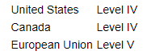
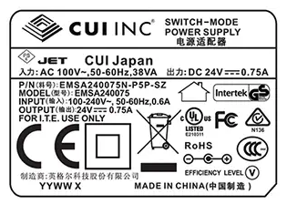
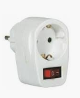

USB-Laders
26 April, 2019
21:57
Inleiding / samenvatting
Door een goede keuze van de juiste USB-lader kan niet alleen energie bespaard worden, maar ook de veiligheid voor personen worden verhoogd en het risico op brand worden verlaagd.
USB-laders zijn soms grote energieslurpers (zowel in rust als ook tijdens het gebruik ).
Als een USB-lader in rust veel energie gebruikt, is het vaak ook een apparaat met een hoog risico op ontploffen / ontbranden, immers het verbruik in rust wordt geheel in warmte omgezet. Tot nu toe heb ik nog geen brand gehad, wel zijn er de afgelopen 10 jaar 3 problemen geweest: 2 USB-laders inwendig ontploft, en 1 zelfs is opengebarsten (zonder verdere gevolgen).
Hoe weet ik of ik een goede of slechte USB-lader heb ?
Allereerst kun je kijken of je USB-lader hier getest is https://lygte-info.dk/info/ChargerIndex%20UK.html
Deze Deen, test USB-laders bijzonder grondig en geeft op basis van een groot aantal paramters een gefundeerd oordeel.
Een beperkt aantal USB-laders is inmiddels (veel mindergrondig) getest door de voedsel en waren authoriteiten: https://www.maxvandaag.nl/wp-content/uploads/2017/11/Factsheet-USB-laders-Onderzoek-elektrische-veiligheid-USB-laders-230-Volt.pdf (Meer dan de helft van de onderzochte USB-laders is naar aanleiding van dit onderzoek verboden omdat ze onveilig waren of omdat de veiligheid onvoldoende was aangetoond.
Met een energiemeter kun je bekijken of het rustverbruik lager is dan …. Als dat het geval is wordt er in ieder geval weinig warmte ontwikkeld.
Als je over een IR camera beschikt, kun je kijken of er geen hotspots tijdens rust en in gebruik ontstaan.
Voor deskundigen is opslopen en kijken eventueel nog een optie.
Het is duidelijk dat de laatste methoden slechts op een beperkt aantal factoren iets zegt en bijvoorbeeld niets zegt over het gevaar om een gevaarlijke schok te krijgen bij de aanraking van een van de aansluitingen.
Hier een setje laders die ik inmiddels als "ongewenst" heb verklaard

Waar vind ik een goede lader ?
Lastige vraag, die ik tot voor kort ook niet kon beantwoorden.
Inmiddels heb ik een goede USB-lader gevonden en ben ik alle laders in huis aan het vervangen.
https://www.ikea.com/nl/nl/catalog/products/20415027/
| 
|
Naast een hogere veiligheid, bespaart het nog iets !
Bij een kWh prijs van 0.23 Euro, heb ik de 3 USB-laders in iets meer dan 6 jaar terugverdiend.
Als ik direct de juiste USB-laders had gekocht was dat waarschijnlijk een jaar of 2 geweest.
Waar | Huidig Verbruik [W] | Nieuw Verbruik [W] | Besparing [Wh] | Besparing [Euro/jaar] | Terugverdientijd [Jaar] |
Fijnstof Sensor | 1.1 | 0.6 | 365*24*(1.1-0.6)=4,380 | 4.380*0.23=1.0074 | 7/1.0074=6.9486 |
Weerstation PIC | 0.37 | 0.28 |
|
|
|
Brain Logger | 0.45-0.57 | 0.26-0.44 |
|
|
|
Lader B | 0.25 | 0 | 365*24*(0.25)=2,190 | 2.19*0.23=0.5037 | 7/0.5037=13.8972 |
Lader M | 0.08 | Schakelaar |
|
|
|
Raspi | 3.65 | 2.7 | 365*24*(3.65-2.7)=8,322.0 | 8.322*0.23=1.9141 | 7/1.9141=3.6571 |
Bed B | 0.4 | Schakelaar |
|
|
|
Totaal Laders |
|
|
|
| 21/(1+0.5+1.9)=6.1765 |
Indien het huidig verbruik geel gearceerd is, betreft het een apparaat dat continue in gebruik is. En met name bij die apparaten zie je een grote daling van het energieverbruik.
Op zich goed om eens alles na te lopen, want zo kom je ook andere sluipverbruikers tegen. Op een aantal plaatsen, zitten USB-laders die zelden of nooit gebruikt worden, hiervan hebben we besloten om daar onderstaande stekerschakelaar (kosten ongeveer 2 Euro) tussen te zetten

Created with Microsoft Office OneNote 2007
One place for all your notes and information